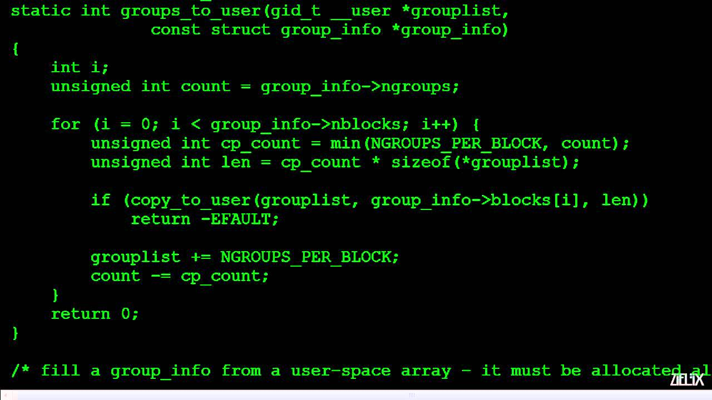

I am Alex Powers, and I am a sophmore at Franklin Highschool. All of the projects in the Projects section were made over the course of one year of digital design and computer coding. All of these projects use a combination of HTML and CSS, and in the future will use Javascript as well. The Journal section is a log of all of the Agendas and Objectives from DDCC in the second semester.
